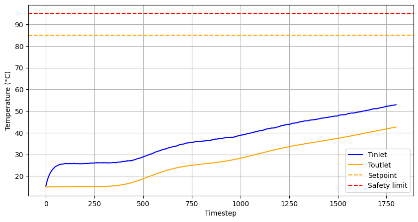
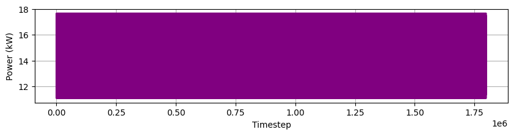

from stable_baselines3 import PPO
from PipeEnv import PipeHeaterSafeEnvGymnasium
from stable_baselines3 import PPO
from simulation_backend import *
env = PipeHeaterSafeEnvGymnasium(params, Tinlet=15, Tset=85, T_ext=20, dt=1.0, t_final=1800)
model = PPO("MlpPolicy", env, verbose=1)
model.learn(total_timesteps=1000000) # adjust for convergence
Using cpu device
Wrapping the env with a `Monitor` wrapper
Wrapping the env in a DummyVecEnv.
---------------------------------
| rollout/ | |
| ep_len_mean | 1.8e+03 |
| ep_rew_mean | -509 |
| time/ | |
| fps | 6678 |
| iterations | 1 |
| time_elapsed | 0 |
| total_timesteps | 2048 |
---------------------------------
---------------------------------------
| rollout/ | |
| ep_len_mean | 1.8e+03 |
| ep_rew_mean | -462 |
| time/ | |
| fps | 3772 |
| iterations | 2 |
| time_elapsed | 1 |
| total_timesteps | 4096 |
| train/ | |
| approx_kl | 0.0205887 |
| clip_fraction | 0.179 |
| clip_range | 0.2 |
| entropy_loss | -1.38 |
| explained_variance | -0.000981 |
| learning_rate | 0.0003 |
| loss | 0.906 |
| n_updates | 10 |
| policy_gradient_loss | -0.0242 |
| std | 0.936 |
| value_loss | 3.25 |
---------------------------------------
-----------------------------------------
| rollout/ | |
| ep_len_mean | 1.8e+03 |
| ep_rew_mean | -414 |
| time/ | |
| fps | 3284 |
| iterations | 3 |
| time_elapsed | 1 |
| total_timesteps | 6144 |
| train/ | |
| approx_kl | 0.013904285 |
| clip_fraction | 0.121 |
| clip_range | 0.2 |
| entropy_loss | -1.33 |
| explained_variance | -0.0019 |
| learning_rate | 0.0003 |
| loss | 0.332 |
| n_updates | 20 |
| policy_gradient_loss | -0.0179 |
| std | 0.901 |
| value_loss | 1.72 |
-----------------------------------------
-----------------------------------------
| rollout/ | |
| ep_len_mean | 1.8e+03 |
| ep_rew_mean | -375 |
| time/ | |
| fps | 3028 |
| iterations | 4 |
| time_elapsed | 2 |
| total_timesteps | 8192 |
| train/ | |
| approx_kl | 0.014753692 |
| clip_fraction | 0.153 |
| clip_range | 0.2 |
| entropy_loss | -1.29 |
| explained_variance | -0.00158 |
| learning_rate | 0.0003 |
| loss | 0.384 |
| n_updates | 30 |
| policy_gradient_loss | -0.0216 |
| std | 0.859 |
| value_loss | 1.27 |
-----------------------------------------
----------------------------------------
| rollout/ | |
| ep_len_mean | 1.8e+03 |
| ep_rew_mean | -339 |
| time/ | |
| fps | 2907 |
| iterations | 5 |
| time_elapsed | 3 |
| total_timesteps | 10240 |
| train/ | |
| approx_kl | 0.01365402 |
| clip_fraction | 0.106 |
| clip_range | 0.2 |
| entropy_loss | -1.24 |
| explained_variance | -0.000283 |
| learning_rate | 0.0003 |
| loss | 0.479 |
| n_updates | 40 |
| policy_gradient_loss | -0.0152 |
| std | 0.824 |
| value_loss | 0.845 |
----------------------------------------
-----------------------------------------
| rollout/ | |
| ep_len_mean | 1.8e+03 |
| ep_rew_mean | -304 |
| time/ | |
| fps | 2598 |
| iterations | 6 |
| time_elapsed | 4 |
| total_timesteps | 12288 |
| train/ | |
| approx_kl | 0.010051656 |
| clip_fraction | 0.117 |
| clip_range | 0.2 |
| entropy_loss | -1.2 |
| explained_variance | -4.8e-05 |
| learning_rate | 0.0003 |
| loss | 0.164 |
| n_updates | 50 |
| policy_gradient_loss | -0.0176 |
| std | 0.79 |
| value_loss | 0.723 |
-----------------------------------------
------------------------------------------
| rollout/ | |
| ep_len_mean | 1.8e+03 |
| ep_rew_mean | -274 |
| time/ | |
| fps | 2650 |
| iterations | 7 |
| time_elapsed | 5 |
| total_timesteps | 14336 |
| train/ | |
| approx_kl | 0.0076602884 |
| clip_fraction | 0.09 |
| clip_range | 0.2 |
| entropy_loss | -1.15 |
| explained_variance | -0.000197 |
| learning_rate | 0.0003 |
| loss | 0.0884 |
| n_updates | 60 |
| policy_gradient_loss | -0.0144 |
| std | 0.75 |
| value_loss | 0.58 |
------------------------------------------
-----------------------------------------
| rollout/ | |
| ep_len_mean | 1.8e+03 |
| ep_rew_mean | -221 |
| time/ | |
| fps | 2699 |
| iterations | 8 |
| time_elapsed | 6 |
| total_timesteps | 16384 |
| train/ | |
| approx_kl | 0.010911705 |
| clip_fraction | 0.0968 |
| clip_range | 0.2 |
| entropy_loss | -1.11 |
| explained_variance | 0.000157 |
| learning_rate | 0.0003 |
| loss | 0.846 |
| n_updates | 70 |
| policy_gradient_loss | -0.0133 |
| std | 0.717 |
| value_loss | 0.432 |
-----------------------------------------
-----------------------------------------
| rollout/ | |
| ep_len_mean | 1.8e+03 |
| ep_rew_mean | -200 |
| time/ | |
| fps | 2741 |
| iterations | 9 |
| time_elapsed | 6 |
| total_timesteps | 18432 |
| train/ | |
| approx_kl | 0.003960505 |
| clip_fraction | 0.0529 |
| clip_range | 0.2 |
| entropy_loss | -1.07 |
| explained_variance | 0.00316 |
| learning_rate | 0.0003 |
| loss | 0.0577 |
| n_updates | 80 |
| policy_gradient_loss | -0.00709 |
| std | 0.696 |
| value_loss | 0.519 |
-----------------------------------------
------------------------------------------
| rollout/ | |
| ep_len_mean | 1.8e+03 |
| ep_rew_mean | -182 |
| time/ | |
| fps | 2750 |
| iterations | 10 |
| time_elapsed | 7 |
| total_timesteps | 20480 |
| train/ | |
| approx_kl | 0.0023021912 |
| clip_fraction | 0.022 |
| clip_range | 0.2 |
| entropy_loss | -1.03 |
| explained_variance | 0.00754 |
| learning_rate | 0.0003 |
| loss | 0.0224 |
| n_updates | 90 |
| policy_gradient_loss | -0.0053 |
| std | 0.667 |
| value_loss | 0.218 |
------------------------------------------
------------------------------------------
| rollout/ | |
| ep_len_mean | 1.8e+03 |
| ep_rew_mean | -166 |
| time/ | |
| fps | 2750 |
| iterations | 11 |
| time_elapsed | 8 |
| total_timesteps | 22528 |
| train/ | |
| approx_kl | 0.0055286037 |
| clip_fraction | 0.04 |
| clip_range | 0.2 |
| entropy_loss | -0.993 |
| explained_variance | 0.00176 |
| learning_rate | 0.0003 |
| loss | 0.0236 |
| n_updates | 100 |
| policy_gradient_loss | -0.00692 |
| std | 0.644 |
| value_loss | 0.159 |
------------------------------------------
------------------------------------------
| rollout/ | |
| ep_len_mean | 1.8e+03 |
| ep_rew_mean | -153 |
| time/ | |
| fps | 2761 |
| iterations | 12 |
| time_elapsed | 8 |
| total_timesteps | 24576 |
| train/ | |
| approx_kl | 0.0059138634 |
| clip_fraction | 0.0564 |
| clip_range | 0.2 |
| entropy_loss | -0.966 |
| explained_variance | 0.00716 |
| learning_rate | 0.0003 |
| loss | 0.045 |
| n_updates | 110 |
| policy_gradient_loss | -0.00831 |
| std | 0.628 |
| value_loss | 0.12 |
------------------------------------------
------------------------------------------
| rollout/ | |
| ep_len_mean | 1.8e+03 |
| ep_rew_mean | -142 |
| time/ | |
| fps | 2781 |
| iterations | 13 |
| time_elapsed | 9 |
| total_timesteps | 26624 |
| train/ | |
| approx_kl | 0.0048699155 |
| clip_fraction | 0.0358 |
| clip_range | 0.2 |
| entropy_loss | -0.922 |
| explained_variance | 0.00776 |
| learning_rate | 0.0003 |
| loss | 0.045 |
| n_updates | 120 |
| policy_gradient_loss | -0.00803 |
| std | 0.592 |
| value_loss | 0.0982 |
------------------------------------------
---------------------------------------
| rollout/ | |
| ep_len_mean | 1.8e+03 |
| ep_rew_mean | -132 |
| time/ | |
| fps | 2778 |
| iterations | 14 |
| time_elapsed | 10 |
| total_timesteps | 28672 |
| train/ | |
| approx_kl | 0.0047135 |
| clip_fraction | 0.0423 |
| clip_range | 0.2 |
| entropy_loss | -0.885 |
| explained_variance | 0.00833 |
| learning_rate | 0.0003 |
| loss | 0.0327 |
| n_updates | 130 |
| policy_gradient_loss | -0.00547 |
| std | 0.582 |
| value_loss | 0.0769 |
---------------------------------------
------------------------------------------
| rollout/ | |
| ep_len_mean | 1.8e+03 |
| ep_rew_mean | -114 |
| time/ | |
| fps | 2762 |
| iterations | 15 |
| time_elapsed | 11 |
| total_timesteps | 30720 |
| train/ | |
| approx_kl | 0.0015008217 |
| clip_fraction | 0.0217 |
| clip_range | 0.2 |
| entropy_loss | -0.86 |
| explained_variance | 0.00549 |
| learning_rate | 0.0003 |
| loss | 0.021 |
| n_updates | 140 |
| policy_gradient_loss | -0.00208 |
| std | 0.562 |
| value_loss | 0.0222 |
------------------------------------------
------------------------------------------
| rollout/ | |
| ep_len_mean | 1.8e+03 |
| ep_rew_mean | -107 |
| time/ | |
| fps | 2763 |
| iterations | 16 |
| time_elapsed | 11 |
| total_timesteps | 32768 |
| train/ | |
| approx_kl | 0.0058878115 |
| clip_fraction | 0.0344 |
| clip_range | 0.2 |
| entropy_loss | -0.838 |
| explained_variance | 0.0233 |
| learning_rate | 0.0003 |
| loss | 0.0153 |
| n_updates | 150 |
| policy_gradient_loss | -0.00247 |
| std | 0.556 |
| value_loss | 0.032 |
------------------------------------------
------------------------------------------
| rollout/ | |
| ep_len_mean | 1.8e+03 |
| ep_rew_mean | -100 |
| time/ | |
| fps | 2760 |
| iterations | 17 |
| time_elapsed | 12 |
| total_timesteps | 34816 |
| train/ | |
| approx_kl | 0.0015212165 |
| clip_fraction | 0.0179 |
| clip_range | 0.2 |
| entropy_loss | -0.815 |
| explained_variance | 0.0273 |
| learning_rate | 0.0003 |
| loss | 0.000402 |
| n_updates | 160 |
| policy_gradient_loss | -0.00366 |
| std | 0.54 |
| value_loss | 0.0224 |
------------------------------------------
------------------------------------------
| rollout/ | |
| ep_len_mean | 1.8e+03 |
| ep_rew_mean | -94.1 |
| time/ | |
| fps | 2742 |
| iterations | 18 |
| time_elapsed | 13 |
| total_timesteps | 36864 |
| train/ | |
| approx_kl | 0.0024965983 |
| clip_fraction | 0.0212 |
| clip_range | 0.2 |
| entropy_loss | -0.785 |
| explained_variance | 0.0199 |
| learning_rate | 0.0003 |
| loss | 0.0146 |
| n_updates | 170 |
| policy_gradient_loss | -0.00461 |
| std | 0.523 |
| value_loss | 0.0144 |
------------------------------------------
-----------------------------------------
| rollout/ | |
| ep_len_mean | 1.8e+03 |
| ep_rew_mean | -88.7 |
| time/ | |
| fps | 2749 |
| iterations | 19 |
| time_elapsed | 14 |
| total_timesteps | 38912 |
| train/ | |
| approx_kl | 0.004826223 |
| clip_fraction | 0.0479 |
| clip_range | 0.2 |
| entropy_loss | -0.763 |
| explained_variance | 0.00729 |
| learning_rate | 0.0003 |
| loss | -0.000157 |
| n_updates | 180 |
| policy_gradient_loss | -0.00534 |
| std | 0.516 |
| value_loss | 0.00506 |
-----------------------------------------
------------------------------------------
| rollout/ | |
| ep_len_mean | 1.8e+03 |
| ep_rew_mean | -83.7 |
| time/ | |
| fps | 2758 |
| iterations | 20 |
| time_elapsed | 14 |
| total_timesteps | 40960 |
| train/ | |
| approx_kl | 0.0032704682 |
| clip_fraction | 0.0311 |
| clip_range | 0.2 |
| entropy_loss | -0.749 |
| explained_variance | -0.0214 |
| learning_rate | 0.0003 |
| loss | 0.0126 |
| n_updates | 190 |
| policy_gradient_loss | -0.00431 |
| std | 0.51 |
| value_loss | 0.0148 |
------------------------------------------
------------------------------------------
| rollout/ | |
| ep_len_mean | 1.8e+03 |
| ep_rew_mean | -79.2 |
| time/ | |
| fps | 2752 |
| iterations | 21 |
| time_elapsed | 15 |
| total_timesteps | 43008 |
| train/ | |
| approx_kl | 0.0064893784 |
| clip_fraction | 0.0669 |
| clip_range | 0.2 |
| entropy_loss | -0.742 |
| explained_variance | 0.0103 |
| learning_rate | 0.0003 |
| loss | 0.00507 |
| n_updates | 200 |
| policy_gradient_loss | -0.00675 |
| std | 0.508 |
| value_loss | 0.0115 |
------------------------------------------
-----------------------------------------
| rollout/ | |
| ep_len_mean | 1.8e+03 |
| ep_rew_mean | -71.1 |
| time/ | |
| fps | 2758 |
| iterations | 22 |
| time_elapsed | 16 |
| total_timesteps | 45056 |
| train/ | |
| approx_kl | 0.004976283 |
| clip_fraction | 0.0381 |
| clip_range | 0.2 |
| entropy_loss | -0.729 |
| explained_variance | 0.00673 |
| learning_rate | 0.0003 |
| loss | -0.000494 |
| n_updates | 210 |
| policy_gradient_loss | -0.00577 |
| std | 0.498 |
| value_loss | 0.00923 |
-----------------------------------------
------------------------------------------
| rollout/ | |
| ep_len_mean | 1.8e+03 |
| ep_rew_mean | -67.5 |
| time/ | |
| fps | 2764 |
| iterations | 23 |
| time_elapsed | 17 |
| total_timesteps | 47104 |
| train/ | |
| approx_kl | 0.0040277643 |
| clip_fraction | 0.0465 |
| clip_range | 0.2 |
| entropy_loss | -0.721 |
| explained_variance | -0.0312 |
| learning_rate | 0.0003 |
| loss | -0.00219 |
| n_updates | 220 |
| policy_gradient_loss | -0.0026 |
| std | 0.497 |
| value_loss | 0.00477 |
------------------------------------------
---------------------------------------------------------------------------
KeyboardInterrupt Traceback (most recent call last)
Cell In[1], line 9
6 env = PipeHeaterSafeEnvGymnasium(params, Tinlet=15, Tset=85, T_ext=20, dt=1.0, t_final=1800)
8 model = PPO("MlpPolicy", env, verbose=1)
----> 9 model.learn(total_timesteps=1000000) # adjust for convergence
File /opt/miniconda3/lib/python3.12/site-packages/stable_baselines3/ppo/ppo.py:311, in PPO.learn(self, total_timesteps, callback, log_interval, tb_log_name, reset_num_timesteps, progress_bar)
302 def learn(
303 self: SelfPPO,
304 total_timesteps: int,
(...)
309 progress_bar: bool = False,
310 ) -> SelfPPO:
--> 311 return super().learn(
312 total_timesteps=total_timesteps,
313 callback=callback,
314 log_interval=log_interval,
315 tb_log_name=tb_log_name,
316 reset_num_timesteps=reset_num_timesteps,
317 progress_bar=progress_bar,
318 )
File /opt/miniconda3/lib/python3.12/site-packages/stable_baselines3/common/on_policy_algorithm.py:323, in OnPolicyAlgorithm.learn(self, total_timesteps, callback, log_interval, tb_log_name, reset_num_timesteps, progress_bar)
320 assert self.env is not None
322 while self.num_timesteps < total_timesteps:
--> 323 continue_training = self.collect_rollouts(self.env, callback, self.rollout_buffer, n_rollout_steps=self.n_steps)
325 if not continue_training:
326 break
File /opt/miniconda3/lib/python3.12/site-packages/stable_baselines3/common/on_policy_algorithm.py:247, in OnPolicyAlgorithm.collect_rollouts(self, env, callback, rollout_buffer, n_rollout_steps)
244 terminal_value = self.policy.predict_values(terminal_obs)[0] # type: ignore[arg-type]
245 rewards[idx] += self.gamma * terminal_value
--> 247 rollout_buffer.add(
248 self._last_obs, # type: ignore[arg-type]
249 actions,
250 rewards,
251 self._last_episode_starts, # type: ignore[arg-type]
252 values,
253 log_probs,
254 )
255 self._last_obs = new_obs # type: ignore[assignment]
256 self._last_episode_starts = dones
File /opt/miniconda3/lib/python3.12/site-packages/stable_baselines3/common/buffers.py:475, in RolloutBuffer.add(self, obs, action, reward, episode_start, value, log_prob)
473 self.rewards[self.pos] = np.array(reward)
474 self.episode_starts[self.pos] = np.array(episode_start)
--> 475 self.values[self.pos] = value.clone().cpu().numpy().flatten()
476 self.log_probs[self.pos] = log_prob.clone().cpu().numpy()
477 self.pos += 1
KeyboardInterrupt:
obs, _ = env.reset()
Tin_hist, Tout_hist, P_hist = [], [], []
for _ in range(env.steps):
action, _ = model.predict(obs)
obs, reward, terminated, truncated, _ = env.step(action)
Tin_hist.append(obs[0])
Tout_hist.append(obs[-1])
P_hist.append(action[0])
import matplotlib.pyplot as plt
plt.figure(figsize=(10,5))
plt.plot(Tin_hist, label="Tinlet", color="blue")
plt.plot(Tout_hist, label="Toutlet", color="orange")
plt.axhline(env.Tset, color="orange", linestyle="--", label="Setpoint")
plt.axhline(95, color="red", linestyle="--", label="Safety limit")
plt.ylabel("Temperature (°C)")
plt.xlabel("Timestep")
plt.legend()
plt.grid(True)
plt.figure(figsize=(10,2))
plt.plot(P_hist*1000, color="purple", label="Heater Power (kW)")
plt.ylabel("Power (kW)")
plt.xlabel("Timestep")
plt.grid(True)
plt.show()

